Part A1: Shooting the images
Please find below two sets of images with projective transforms, or images with a fixed center of projection. This was done by keeping the camera eye lens fixed while rotating to take the various images.


This project is intended to implement image warping and mosaicing, finding homographies between two images and using them to rectify images into varying perspectives, warp images, and stitch together mosaics/panoramas using various images with the same center of projection. Hope you enjoy!
Please find below two sets of images with projective transforms, or images with a fixed center of projection. This was done by keeping the camera eye lens fixed while rotating to take the various images.
I computed im1_points and im2_points for the homography by using Matplotlib's ginput function and established point correspondences between two images. One such point correspondence is shown below. While more than 4 point correspondences are recommended to compute a good homography between the two images, I established only 2 point correspondences for the purpose of this specific exercise in order to make the systems of equations explained soon more visible given that the number of equations is (2 * # of correspondences).


I then used these point correspondences to calculate the systems of equations for the homography. For each point correspondence $(x, y) -> (x', y')$ we can form the following relation:

We can rearrange these to form the following equations and then formulate the A and b matrices for the systems of equations as follows:


Where i is for each point correspondence (explaining the relation between number of equations and number of point correspondences.
We then perform least squares to find the values in h (equation is Ah = b). The 8 values in h are the first 8 values in the 3x3 homography matrix H (the
ninth value or H_33 is 1). We can see the systems of equations (matrices A and b) and the homography matrix H for the sofa point correspondences below. I
have casted the values of A and b for ease of reading, though they are in reality floats.


Please find below the source images and rectified images:
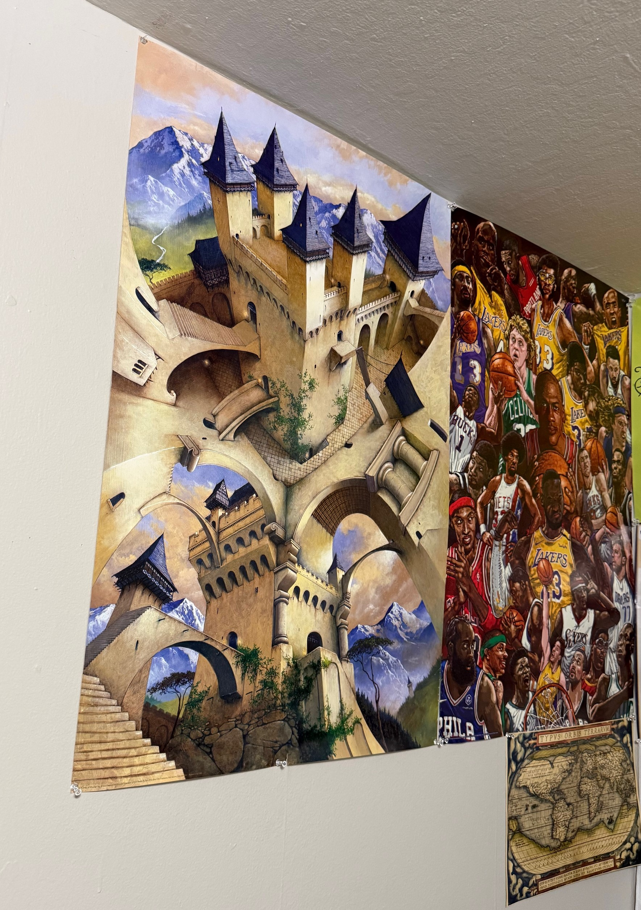
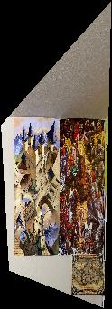
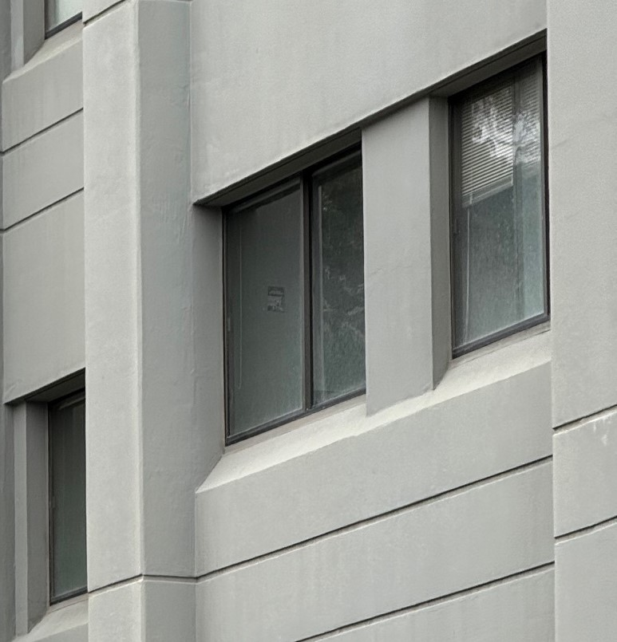
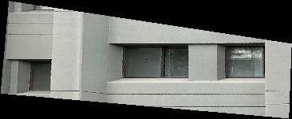
The bilinear interpolation seems to provide a slightly clearer image for rectification than the nearest neighbor interpolation.
Please find source images and my resulting image mosaics below. I implemented an all-at-once mosaicing strategy and used weighted averaging to reduce edge artifacts by applying the relevant alpha mask when blending. This procedure did a pretty solid job blending the warped images together.
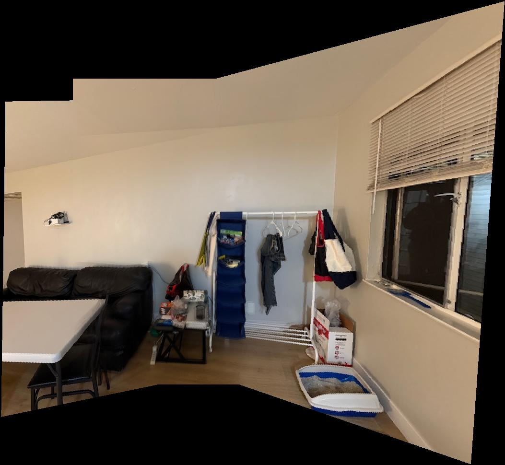
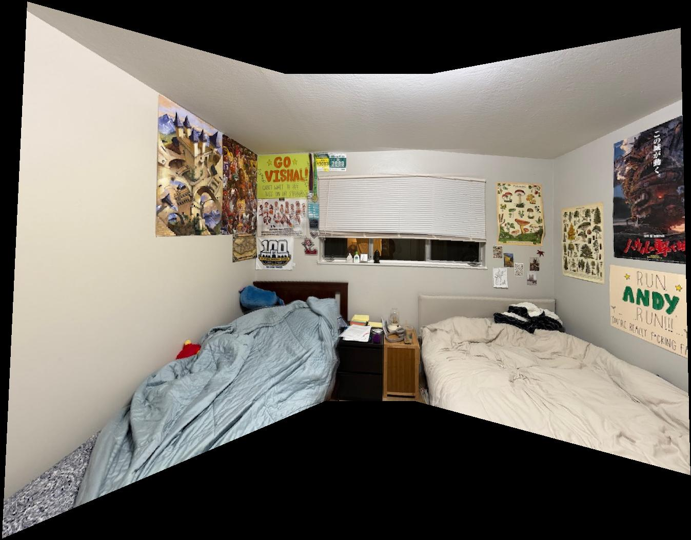
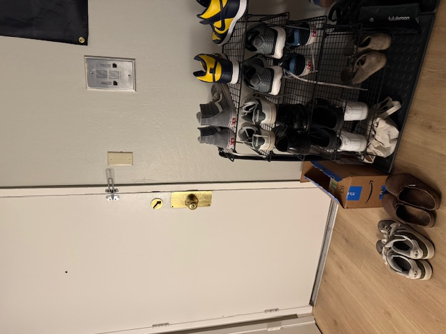
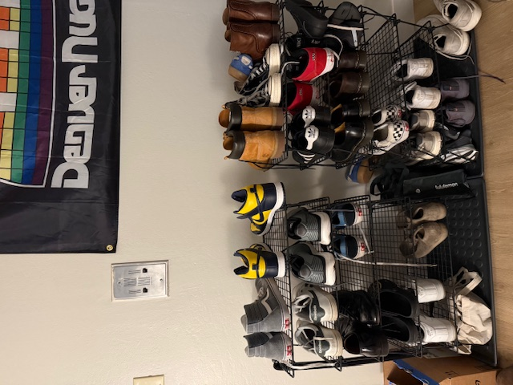
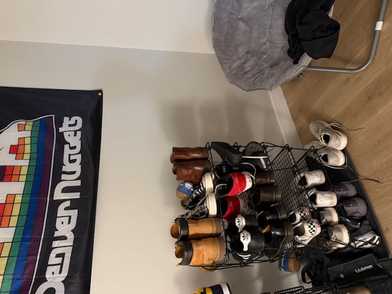
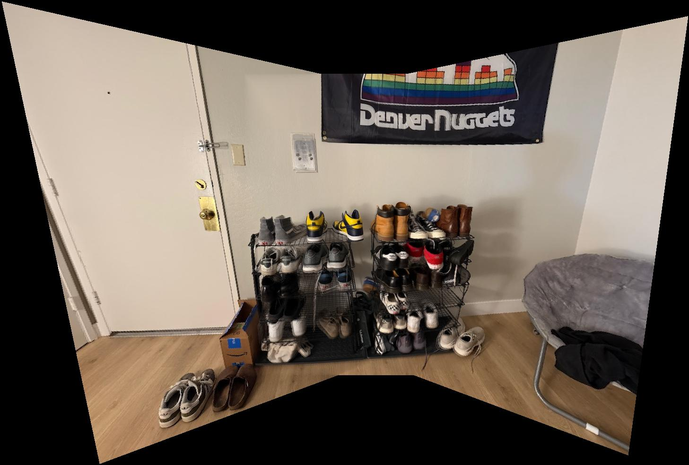
Please find below the two images. The first contains the Harris corners of my chosen zebra image with min distance parameter of 50. The second image implements ANMS with 200 corners.
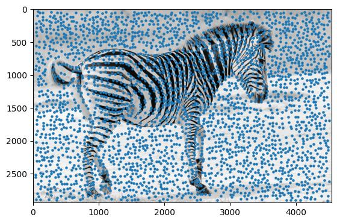
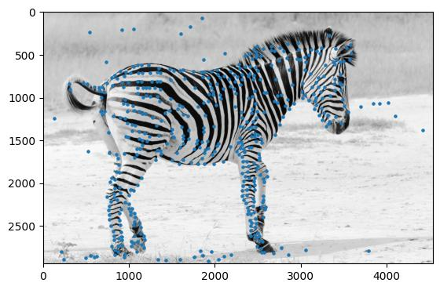